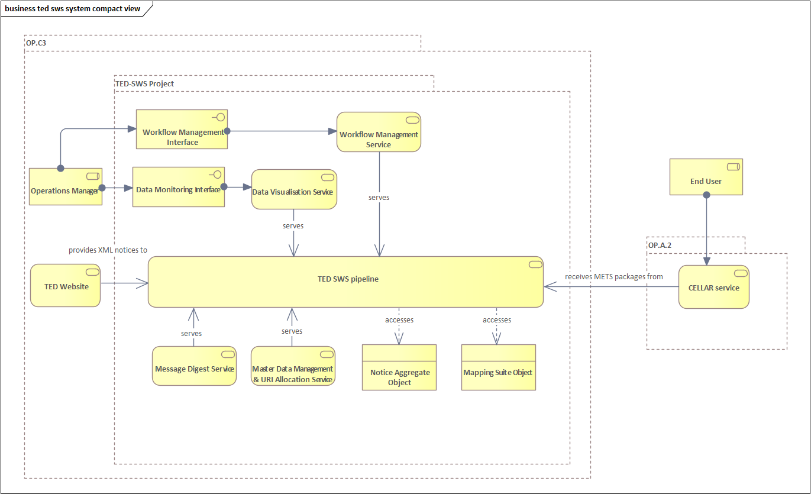
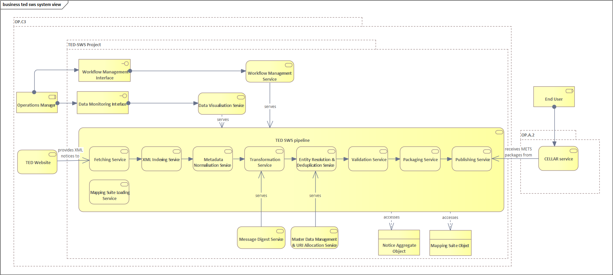
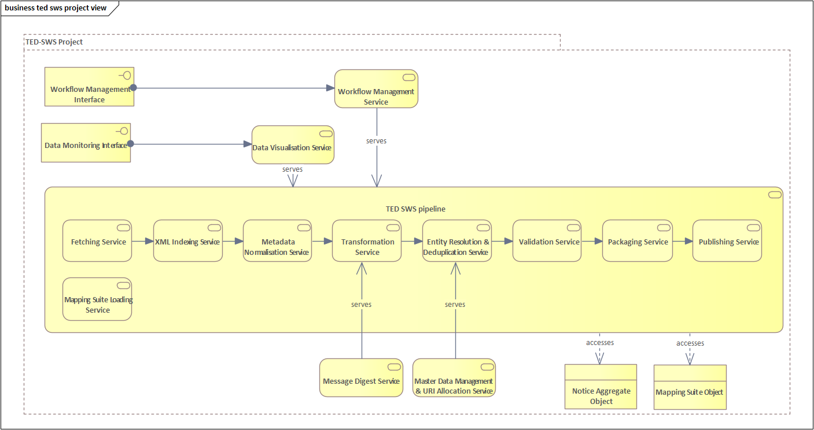
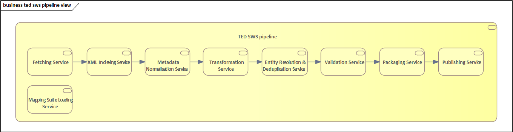
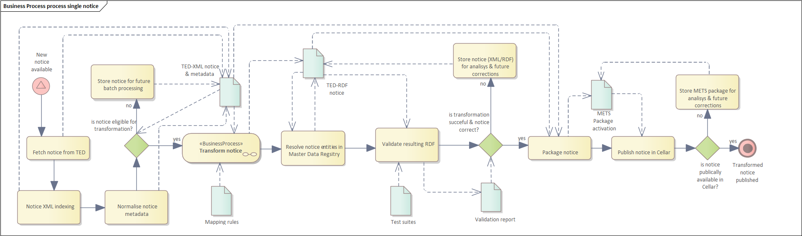
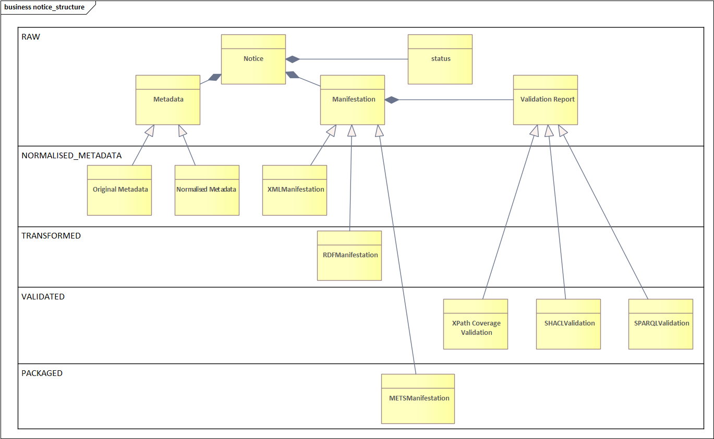
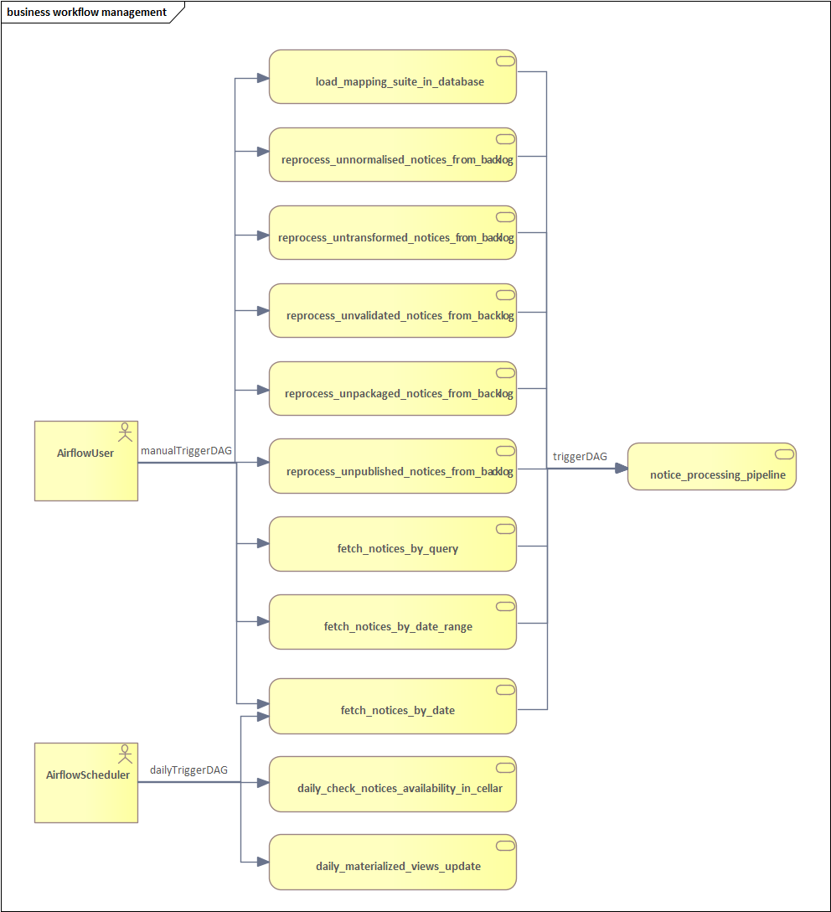

TED-SWS Architecture
Use Cases
Operations Manager is the main actor that will interact with the TED-SWS system. When presenting the system architecture we strongly rely on the perspective of this actor
For Operations Manager the following use cases are relevant:
-
to fetch notices from the TED website based on a query
-
to fetch notices from the TED website based on a date range
-
to fetch notices from the TED website based on date
-
to load a Mapping Suite into the system
-
to reprocess non-normalized notices from the backlog
-
to reprocess untransformed notices from the backlog
-
to reprocess unvalidated notices from the backlog
-
to reprocess unpackaged notices from the backlog
-
to reprocess the notices we published from the backlog
System architecture
The main points of architecture for a system that will transform TED notices from XML format to RDF format using an ETL architecture with batch processing pipeline are:
-
Data collection: An API would be used to collect the daily notices from the TED website in XML format and store them in a data warehouse.
-
Metadata management: A metadata management module would be collect, store and provide filtering capabilities for notices based on their features, such as form number, date of publication, XSD schema version, subform type, etc.
-
Data transformation: A data transformation module would be used to convert the XML data into RDF format.
-
Data loading: The transformed RDF data would be loaded into a triple store, such as Cellar, for further analysis or reporting.
-
Pipeline management: Airflow would be used to schedule and manage the pipeline, ensuring that the pipeline is run on a daily basis to process the latest batch of notices from the TED website. Airflow would also be used to monitor the pipeline and provide real-time status updates.
-
Data access: A SPARQL endpoint or an API would be used to access the RDF data stored in the triple store. This would allow external systems to query the data and retrieve the information they need.
-
Security: The system would be protected by a firewall and would use secure protocols (e.g. HTTPS) for data transfer. Access to the data would be controlled by authentication and authorization mechanisms.
-
Scalability: The architecture should be designed to handle large amounts of data and easily scale horizontally by adding more resources as the amount of data grows.
-
Flexibility: The architecture should be flexible to handle changes in the data structure without having to modify the database schema.
-
Performance: The architecture should be designed for high-performance to handle high levels of read and write operations to process data in a short period of time.
Figure 1.1 shows the compact, general image of the TED-SWS system architecture from the system’s business point of view. The system represents a pipeline for processing notices from the TED Website and publishing them to the CELLAR service.
For the monitoring and management of internal processes, the system offers two interfaces. An interface for data monitoring, in the diagram, the given interface is represented by the name of “Data Monitoring Interface”. Another interface is for the monitoring and management of system processes; in the diagram, the given interface is represented by the name “Workflow Management Interface”. Operations Manager will use these two interfaces for system monitoring and management.
The element of the system that will process the notices is the TED-SWS pipeline. The input data for this pipeline will be the notices in XML format from the TED website. The result of this pipeline is a METS package for each processed notice and its publication in CELLAR, from where the end user will be able to access notices in RDF format.
Providing, in Figure 1.1, a compact view of the TED-SWS system architecture at the business level is useful because it allows stakeholders and decision-makers to quickly and easily understand how the system works and how it supports the business goals and objectives. A compact view of the architecture can help to communicate the key components of the system and how they interact with each other, making it easier to understand the system’s capabilities and limitations. Additionally, a compact view of the architecture can help to identify any areas where the system could be improved or where additional capabilities are needed to support the business. By providing a clear and concise overview of the system architecture, stakeholders can make more informed decisions about how to use the system, how to improve it, and how to align it with the business objectives.
In Figure 1.1 also is provided, input and output dependencies for a TED-SWS system architecture. This is useful because it helps to identify the data sources and data destinations that the system relies on, as well as the data that the system produces. This information can be used to understand the data flows within the system, how the system is connected to other systems, and how the system supports the business. Input dependencies help to identify the data sources that the system relies on, such as external systems, databases, or other data sources. This information can be used to understand how the system is connected to other systems and how it receives data. Output dependencies help to identify the data destinations that the system produces, such as external systems, databases, or other data destinations. This information can be used to understand how the system is connected to other systems and how it sends data. By providing input and output dependencies for the TED-SWS system architecture, stakeholders can make more informed decisions about how to use the system, how to improve it, and how to align it with the business objectives.

Figure 1.1 Compact view of system architecture at the business level
In Figure 1.2 the general extended architecture of the TED-SWS system is represented, in this diagram, the internal components of the TED-SWS pipeline are also included.

Figure 1.2 Extended view of system architecture at business level
Figure 1.3 shows the architecture of the TED-SWS system without its peripheral elements. This diagram is intended to highlight the services that serve the internal components of the pipeline.
Workflow Management Service is an external TED-SWS pipeline service that performs pipeline management. This service provides a control interface, in the figure it is represented by Workflow Management Interface.
Workflow Management Interface represents an internal process control interface, this component will be analysed in a separate diagram.
Data Visualization Service is a service that manages logs and pipeline data to present them in a form of dashboards.
Data Monitoring Interface is a data visualization and dashboard editing interface offered by the Data Visualization Service.
Message Digest Service is a service that serves the transformation component of the TED-SWS pipeline, within the transformation to ensure custom RML functions, an external service is needed that will implement them.
Master Data Management & URI Allocation Service is a service for storing and managing unique URIs, this service performs URI deduplication.
The TED-SWS pipeline contains a set of components, all of which access Notice Aggregate and Mapping Suite objects.

Figure 1.3 TED-SWS architecture at business level
Figure 1.4 shows the TED-SWS pipeline and its components, and this view aims to show the connection between the components.
The pipeline has the following components:
-
Fetching Service
-
XML Indexing Service
-
Metadata Normalization Service
-
Transformation Service;
-
Entity Resolution & Deduplication Service
-
Validation Service
-
Packaging Service
-
Publishing Service
-
Mapping Suite Loading Service
Fetching Service is a service that extracts notices from the TED website and stores them in the database.
XML Indexing Service is a service that extracts all unique XPaths from an XML and stores them as metadata. Unique XPaths are used later to validate if the transformation to RDF format, has been done for all XPaths from a notice in XML format.
Metadata Normalization Service is a service that normalises the metadata of a notice in an internal work format. This normalised metadata will be used in other processes on a notice, such as the selection of a Mapping Suite for transformation or validation of a notice.
Transformation Service is the service that transforms a notice from the XML format into the RDF format, using for this a Mapping Suite that contains the RML transformation rules that will be applied.
Entity Resolution & Deduplication Service is a service that performs the deduplication of entities from RDF manifestation, namely Organization and Procedure entities.
Validation Service is a service that validates a notice in RDF format, using for this several types of validations, namely validation using SHACL shapes, validation using SPARQL tests and XPath coverage verification.
Packaging Service is a service that creates a METS package that will contain notice RDF manifestation.
Publishing Service is a service that publishes a notice RDF manifestation in the required format, in the case of Cellar the publication takes place with a METS package.

Figure 1.4 TED-SWS pipeline architecture at business level
Processing single notice (BPMN perspective)
The pipeline for processing a notice is the key element in the TED-SWS system, the architecture of this pipeline from the business point of view is represented in Figure 2. Unlike the previously presented figures, in Figure 2 the pipeline is rendered in greater detail and are presented relationships between pipeline steps and the artefacts that produce or use them.
Based on Figure 2, it can be noted that the pipeline is not a linear one, within the pipeline there are control steps that check whether the following steps should be executed for a notice.
There are 3 control steps in the pipeline, namely:
-
Check notice eligibility for transformation
-
Check notice eligibility for packaging
-
Check notice availability in Cellar
The “Check notice eligibility for transformation” step represents the control of a notice if it can be transformed with a Mapping Suite, if it can be transformed it goes to the next transformation step, otherwise the notice is stored for future processing.
The “Check notice eligibility for packaging” step checks if a notice RDF manifestation after the validation step is valid for packaging in a METS package. If it is valid, proceed to the packing step, otherwise, store the intermediate result for further analysis.
The “Check notice availability in Cellar” step checks, after the publication step in Cellar, if a published notice is already accessible in Cellar. If the notice is accessible, then the pipeline is finished, otherwise the published notice is stored for further analysis.
Pipeline steps produce and use artefacts such as:
-
TED-XML notice & metadata;
-
Mapping rules
-
TED-RDF notice
-
Test suites
-
Validation report
-
METS Package activation

Figure 2 Single notice processing pipeline at business level
Based on Figure 2, we can notice that the artefacts for a notice appear with the passage of certain steps in the pipeline. To be able to conveniently manage the state of a notice and all its artefacts depending on its state, a notice represents an aggregate of artefacts and a state, which changes dynamically during the pipeline.
Application architecture
In this section, we address the following questions:
-
How is the data organised?
-
How does the data structure evolve within the process?
-
Howe does the business process look like?
-
How is the business process realised in the Application?
Notice status transition map
A TED-SWS pipeline implement a hybrid architecture based on ETL pipeline with status transition map for a notice. The TED-SWS pipeline have many steps and is not a linear pipeline, in this case using a notice status transition map, for a complex pipeline with multiple steps and ramifications like as TED-SWS pipeline, is a good architecture choice for several reasons:
-
Visibility: A notice status transition map provides a clear and visual representation of the different stages that a notice goes through in the pipeline. This allows for better visibility into the pipeline, making it easier to understand the flow of data and to identify any issues or bottlenecks.
-
Traceability: A notice status transition map allows for traceability of notices in the pipeline, which means that it’s possible to track a notice as it goes through the different stages of the pipeline. This can be useful for troubleshooting, as it allows for the identification of which stage the notice failed or had an issue.
-
Error Handling: A notice status transition map allows for the definition of error handling procedures for each stage in the pipeline. This can be useful for identifying and resolving errors that occur in the pipeline, as it allows for a clear understanding of what went wrong and what needs to be done to resolve the issue.
-
Auditing: A notice status transition map allows for the auditing of notices in the pipeline, which means that it’s possible to track the history of a notice, including when it was processed, by whom, and whether it was successful or not.
-
Monitoring: A notice status transition map allows for the monitoring of notices in the pipeline, which means that it’s possible to track the status of a notice, including how many notices are currently being processed, how many have been processed successfully, and how many have failed.
-
Automation: A notice status transition map can be used to automate some of the process, by defining rules or triggers to move notices between different stages of the pipeline, depending on the status of the notice.
Each notice has a status during the pipeline, a status corresponds to a step in the pipeline that the notice passed. Figure 3.1 shows the transition flow of the status of a notice, as a note we must take into account that a notice can only be in one status at a given time. Initially, each notice has the status of RAW and the last status, which means finishing the pipeline, is the status of PUBLICLY_AVAILABLE.
Based on the use cases of this pipeline, the following statuses of a notice are of interest to the end user:
-
RAW
-
NORMALISED_METADATA
-
INELIGIBLE_FOR_TRANSFORMATION
-
TRANSFORMED
-
VALIDATED
-
INELIGIBLE_FOR_PACKAGING
-
PACKAGED
-
INELIGIBLE_FOR_PUBLISHING
-
PUBLISHED
-
PUBLICLY_UNAVAILABLE
-
PUBLICLY_AVAILABLE

Figure 3.1 Notice status transition
The names of the statuses are self-descriptive, but attention should be drawn to some statuses, namely:
-
INDEXED
-
NORMALISED_METADATA
-
DISTILLED
-
PUBLISHED
-
PUBLICLY_UNAVAILABLE
-
PUBLICLY_AVAILABLE
The INDEXED status means that the set of unique XPaths appearing in its XML manifestation has been calculated for a notice. The unique set of XPaths is subsequently required when calculating the XPath coverage indicator for the transformation.
The NORMALISED_METADATA status means that for a notice, its metadata has been normalised. The metadata of a notice is normalised in an internal format to be able to check the eligibility of a notice to be transformed with a Mapping Suite package.
The status DISTILLED is used to indicate that the RDF manifestation of a notice has been post processed. The post-processing of an RDF manifestation provides for the deduplication of the Procedure or Organization type entities and the insertion of corresponding triplets within this RDF manifestation.
The PUBLISHED status means that a notice has been sent to Cellar, which does not mean that it is already available in Cellar. Since there is a time interval between the transmission and the actual appearance in the Cellar, it is necessary to check later whether a notice is available in the Cellar or not. If the verification has taken place and the notice is available in the Cellar, it is assigned the status of PUBLICLY_AVAILABLE, if it is not available in the Cellar, the status of PUBLICLY_UNAVAILABLE is assigned to it.
Notice structure
Notice structure has a NoSQL data model, this architecture choice is based on dynamic behaviour of notice structure which evolves over time while TED-SWS pipeline running and besides that there are other reasons:
-
Schema-less: NoSQL databases are schema-less, which means that the data structure can change without having to modify the database schema. This allows for more flexibility when processing data, as new data types or fields can be easily added without having to make changes to the database. This is particularly useful for notices that are likely to evolve over time, as the structure of the notices can change without having to make changes to the database.
-
Handling Unstructured Data: NoSQL databases are well suited for handling unstructured data, such as JSON or XML, that can’t be handled by SQL databases. This is particularly useful for ETL pipelines that need to process unstructured data, as notices are often unstructured and may evolve over time.
-
Handling Distributed Data: NoSQL databases are designed to handle distributed data, which allows for data to be stored and processed on multiple servers. This can help to improve performance and scalability, as well as provide fault tolerance. This is particularly useful for notices that are likely to evolve over time, as the volume of data may increase and need to be distributed.
-
Flexible Querying: NoSQL databases allow for flexible querying, which means that the data can be queried in different ways, including by specific fields, by specific values, and by ranges. This allows for more flexibility when querying the data, as the structure of the notices may evolve over time.
-
Cost-effective: NoSQL databases are generally less expensive than SQL databases, as they don’t require expensive hardware or specialized software. This can make them a more cost-effective option for ETL pipelines that need to handle large amounts of data and that are likely to evolve over time.
Overall, a NoSQL data model is a good choice for notice structure in an ETL pipeline that is likely to evolve over time because it allows for more flexibility when processing data, handling unstructured data, handling distributed data, flexible querying and it’s cost-effective.
Figure 3.2 shows the structure of a notice and its evolution depending on the state in which a notice is located. In the given figure, the emphasis is placed on the states from which a certain part of the structure of a notice is present. As a remark, it should be taken into account that once an element of the structure of a notice is present for a certain state, it will also be present for all the states derived from it, such as the flow of states presented in Figure 3.1.

Figure 3.2 Dynamic behaviour of notice structure based on status
Based on Figure 3.2, it is noted that the structure of a notice evolves with the transition to other states.
For a notice in the state of NORMALISED_METADATA, we can access the following fields of a notice:
-
Original Metadata
-
Normalised Metadata
-
XML Manifestation
For a notice in the TRANSFORMED state, we can access all the previous fields and the following new fields of a notice:
-
RDF Manifestation.
For a notice in the VALIDATED state, we can access all the previous fields and the following new fields of a notice:
-
XPath Coverage Validation
-
SHACL Validation
-
SPARQL Validation
For a notice in the PACKAGED state, we can access all the previous fields and the following new fields of a notice:
-
METS Manifestation
Application view of the process
The primary actor of the TED-SWS system will be the Operations Manager, who will interact with the system. Application-level pipeline control is achieved through the Airflow stack. Figure 4 shows the AirflowUser actor representing Operations Manager, this diagram is at the application level of the process.

Figure 4 Dependencies between Airflow DAGs
Based on the use cases defined for an Operations Manger, Figure 4 shows the control functionality of the TED-SWS pipeline that it can use. In addition to the functionality available for the AirflowUser actor, the dependency between DAGs is also rendered. We can note that another actor named AirflowScheduler is defined, this actor represents an automatic execution mechanism at a certain time interval of certain DAGs.